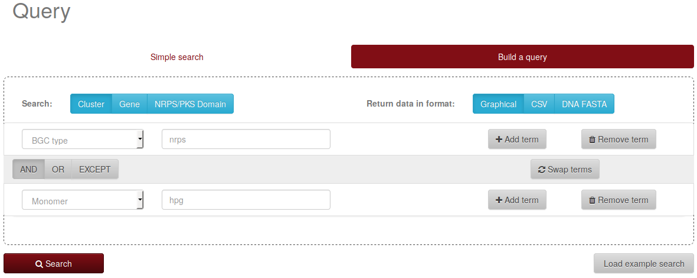
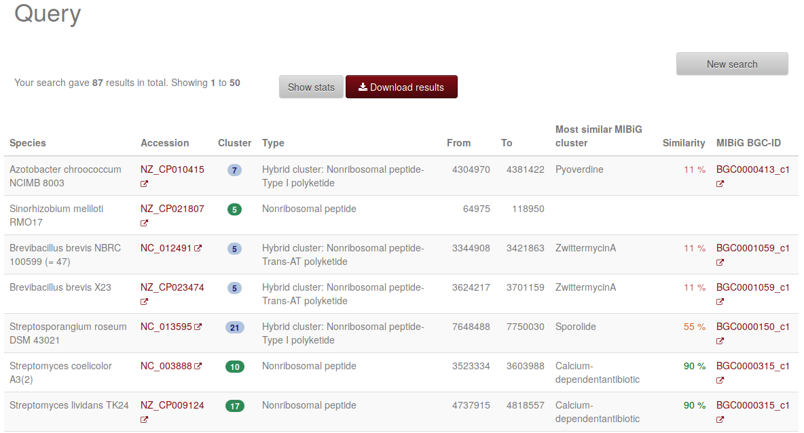

On the "Build a query" tab, a user can click the "Add term" button to create a second search term. For the first
term, he or she might, e.g., select "BGC type" as category and enter "nrps" as the search string. For the second term,
he or she could, e.g., select "monomer" as category and enter "hpg" as search string, and hit "search".

Query to find NRPS clusters including the monomer hydroxyphenylglycine (hpg).
Currently three BGCs in the database match these search criteria and are returned on the results page:

Result for searching NRPS clusters including the monomer hydroxyphenylglycine (hpg).